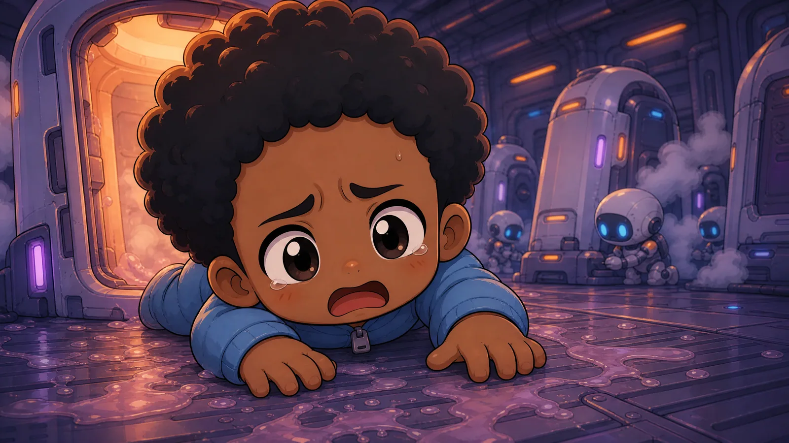

Max woke up mid-scream. He did not remember starting it. He only remembered being inside it, throat on fire, lungs trying to punch his way out.

A lid unfolded above him. White light slammed down. Cold vapor crawled out of the capsule and over his face like curious fingers.

Blue text appeared between Max and the light.
It was not on glass.
It was not on a screen.
It was just there.

[BOOTSTRAP COMPLETE]
[HOST: ASSET #864]
[NANITE SWARM: SYNCHRONIZED]
[REALITY LAYER: ACTIVE]
His mouth tasted like copper and freezer burn. His heartbeat showed up as a thin red line in the corner of the HUD, optional telemetry, as if his body were a service they could monitor but not own.

Another box.

[SYSTEM] Good morning, Max.
Max slapped at the air. The text stayed exactly where it was, as if nailed to the universe.

He sat up too fast, bounced off a restraint strap he hadn't noticed, and fell sideways out of the cryopod in a spill of thaw gel and dignity.

The floor was ribbed steel, freezing, and sticky with something that had dried years ago.

Max's body remembered things his mind didn't:
how to catch himself on an elbow,
how to curse in three languages,
how to throw up without choking on it.

Memory followed, broken and ugly.

An office.
A morning meeting.
A roadmap.
A product manager saying, "We only need this to scale to fifty million users by Friday."
Max saying, "Then we need different laws of physics."
Laughter.
A contract packet.
A checkbox.

Max signed it grinning. Sleep through the bad years. Wake up after scarcity. Spend the rest of his life on plants and pickleball, with no roadmap and no boss.

Max's stomach heaved. He rolled onto his side and vomited again...less gel this time, more acid, and watched the mess slide toward a floor grate that drank it without judgment. His hands shook until he had to press them flat to the deck to steady them.

Somewhere in the wall, machinery clicked through a checklist only it could hear.

He tried to stand and failed once, twice, on the third try the robot helper reached out and caught him. His reflection in the chrome chassis of the bot was wrong in a way he couldn't figure out through the fog his mind was wrapped in. His own face, but the eyes moved a half beat later than he felt himself moving them, as if someone else were interpreting his nerve impusles and executing them with a slight lag.

A thin line of blood ran from his nose and stopped halfway, as if the nanites couldn't decide whether bleeding was on-brand.

He laughed. It was harsh, strained and full of stress.

[STABILITY NOTICE]
Neural bridge calibrating.
Please avoid sudden existential conclusions for the next 90 seconds.
Max wiped his face. The blood smeared, and then retracted, as if the nanites couldn't stand the mess.

The helper bot squared the EV suit in front of Max like it was offering a flag of surrender. Its chest grille crackled alive.
"Welcome, Valued Asset #864! I am V.A.L.U., your Valued Asset Logistics Unit. On behalf of The Company, congratulations on your return to meaningful participation."
The voice was warm, polished, and weaponized.
"Where am I?" Max asked.

"You're asking amazing questions already! You are currently in Sector 7 Orientation Bay Delta-Three. Please remain calm while your new physical permissions initialize."
"My what?"
A pulse went through Max's skeleton. Not pain exactly. More like every atom in his body checking in with management.
The blue UI erupted.
[CORE ATTRIBUTES DETECTED]
EFFICIENCY 11
LUCK 06
TECHNICAL 12
SPEED 09
LEVEL 1
[NEW RULESET APPLIED]
World interactions now mediated by licensed nanotechnology.Max stopped breathing.
"Licensed by who?"
"The Company."
"Then who do I yell at?"
"Yelling is a non-productive output. Put on the EV suit if you intend to survive the walk to Launch Bay C."
The compartment door irised open.
Cold corridor air rushed in, smelling like antiseptic, old metal, and people who had worked through too many shifts.
Max stepped out because standing still felt like signing something.
The hallway widened into a transit spine lined with cryo glass on both sides.
Rows and rows of pods, stacked two high, each with a number, each with frost breathing against the inside.
Humans floated behind the glass in every posture sleep could fake: curled, rigid, hands open, fists closed.
Some had condensation halos around their faces like ghostly crowns.
Service robots moved down the lanes in practiced silence.
One adjusted a temperature collar.
One swapped a nutrient cartridge.
One scraped frost off a viewport with tender, surgical patience.
One paused at a pod where the occupant's eyes were open and unblinking, then clipped a black privacy shade over the glass and moved on.
Max slowed.
"How many people are in here?"
"Current local inventory: 6,412 suspended assets," V.A.L.U. said. "Excludes temporary overflow and non-human labor classes."
"Inventory."
"Preferred term: workforce reserve."
As they walked, overhead speakers played a soft instrumental loop that was either calming or a threat depending on how honest you felt.
Every fifty meters, a lit sign:
THAW IS A PRIVILEGE.
PRODUCTIVITY IS GRATITUDE.
Max kept counting pods until numbers stopped helping.
In one bay, three human techs in patched EVA liners were awake and working fast, rolling a fresh thaw unit into place while two nurse-drones stabilized the occupant's limbs with nylon straps.
The person inside was awake enough to panic and not awake enough to understand.
"Do they know what's happening to them?" Max asked.
"Awareness windows are intentionally managed for emotional continuity," V.A.L.U. replied.
"Say that like a person."
"No."
They passed another row where condensation had been wiped from one viewport from the inside.
A message in fingertip streaks:
IS IT STILL TUESDAY?
Max looked away first.
His HUD opened another pane without asking:
[ACCOUNT STATUS]
OUTSTANDING DEBT: $1,000,000
MINIMUM PAYMENT SCHEDULE: ACTIVE
DEFAULT PENALTIES: ENABLED"Did you just put a subscription on gravity?" Max asked.
"That's an interesting metaphor."
"Did. You."
"Physics-layer access is provided as a debt-backed service."
Max laughed once, too sharp.
"Of course it is."
The corridor dumped into a cargo artery big enough to swallow buildings.
Forklifts crawled under hanging containers.
Loader drones zipped on ceiling rails.
Crews in mixed suits hand-signaled across noise and distance.
Some humans moved like veterans.
Some moved like Max: one beat behind their own bodies.
No one stopped to welcome him.
No one had time.
V.A.L.U. kept pace at his shoulder through a service bot whose smile-screen never changed.
"This is Cargo Spine Nine. All outbound salvage and inbound debt recovery routes through here."
"Inbound debt recovery?"
"Returned assets, forfeited goods, and reclaimed biological collateral."
Max stared at the bot.
"You make nightmares sound like accounting."
"Accounting is one of our safest shared languages."
At the far end, pressure doors split open to reveal Launch Bay C.
The bay was cathedral-huge and all hard edges: concentric docking rings, fueling arms, mag clamps, warning strobes, the black of open space beyond armored lattice.
Skiffs hung in racks like metal insects, patched and re-patched.
Most were two-seat.
Some were cargo blocks with engines bolted on like apology notes.
One sat alone on a lower cradle under an amber light.
Small.
Narrow cockpit.
Single harness.
Paint burned away everywhere except the side panel where someone had hand-lettered:
PENANCE WINDOW
V.A.L.U. brightened.
"Congratulations! Your introductory assignment includes command of a one-asset salvage skiff."
"Command?"
"You will pilot, assess, and recover value under approved hazard conditions."
"By myself."
"You will not be alone," V.A.L.U. said. "You will have me."
Max looked up at the launch aperture.
Beyond it: a graveyard of cracked hulls drifting in slow geometry, every shape a story someone had stopped paying to finish.
"What happens if I refuse?"
V.A.L.U. produced another pane.
[DECLINE PATHWAY]
Immediate reassignment: Debt Processing Detail
Expected role: Manual hazard sanitation
Median survival: 36%Max read it twice.
"That's not a choice."
"Correct. It is a pathway."
Dock crew swarmed his assigned skiff, running fast checks with the blank focus of people who had stopped pretending this part was special.
One mechanic rapped the canopy and gave him a flat thumbs-up that meant works enough.
Inside the cockpit, a faded sticker on the console read:
IF YOU CAN READ THIS, YOU OWE MORE NOW
Max put one boot on the ladder, then paused.
"Why me?"
"Because you woke," V.A.L.U. said. "And because your current debt profile benefits from early-field variance."
"Say it plain."
"If you survive, your repayment speed may increase. If you fail, replacement cost is already modeled."
Max closed his eyes for one breath that felt borrowed.
When he opened them, the skiff was still there.
The debt was still there.
The stars were still there.
He climbed in.
Harness locked over his chest.
The canopy hissed shut.
Blue text slid into place.
[ROUND 1/10 READY]
SKIFF: PENANCE WINDOW
CREW: 1
OBJECTIVE: RECOVER VALUE. REMAIN BILLABLE.Max laughed once, low and dangerous.
"Okay," he said to the glass, the bot, the station, and whatever part of himself had not quit yet.
"Let's see what your game costs."